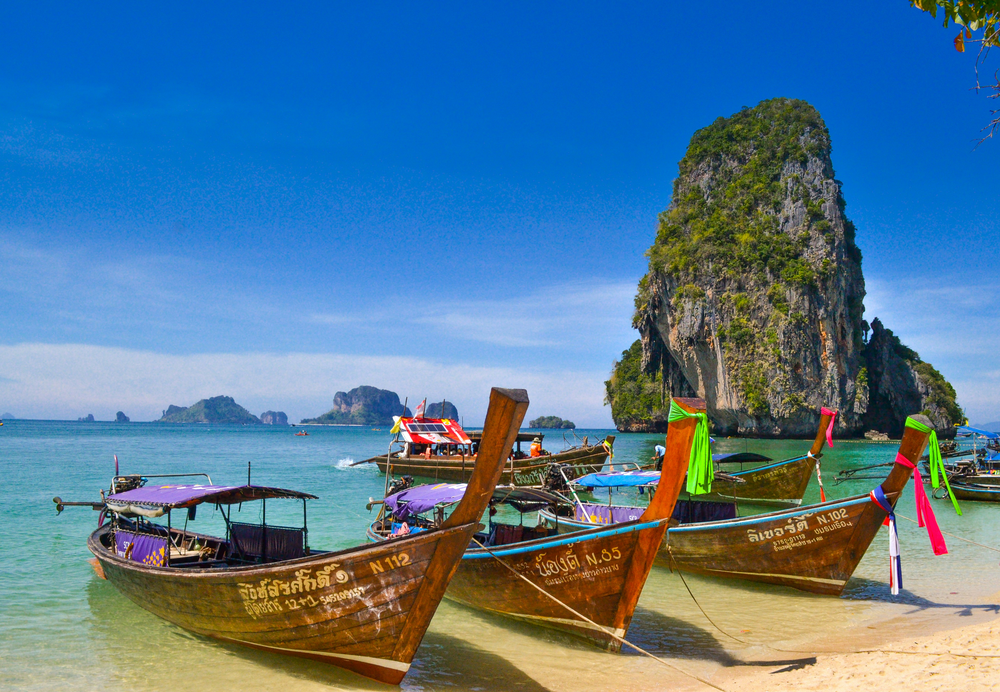
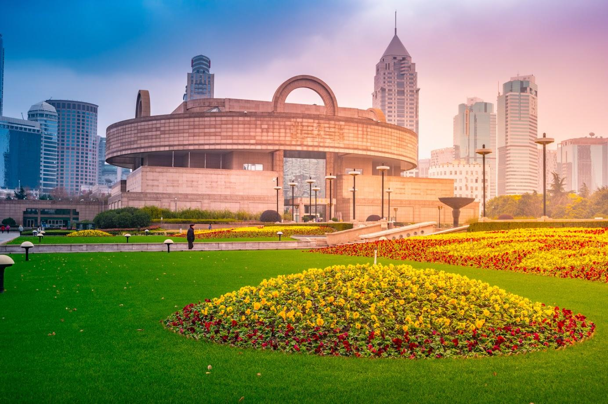
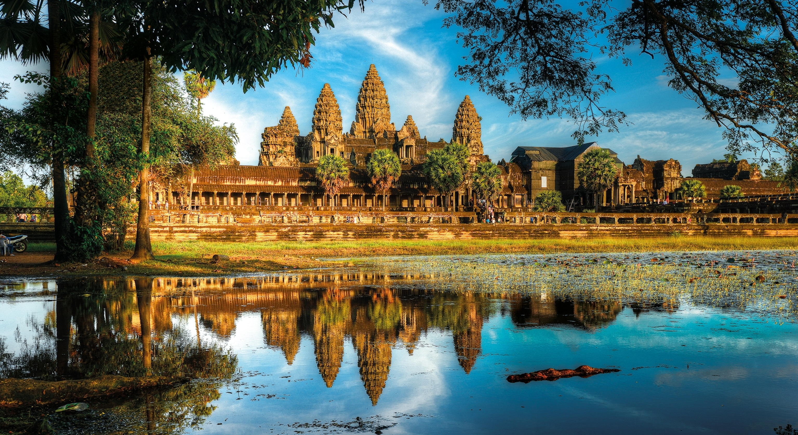
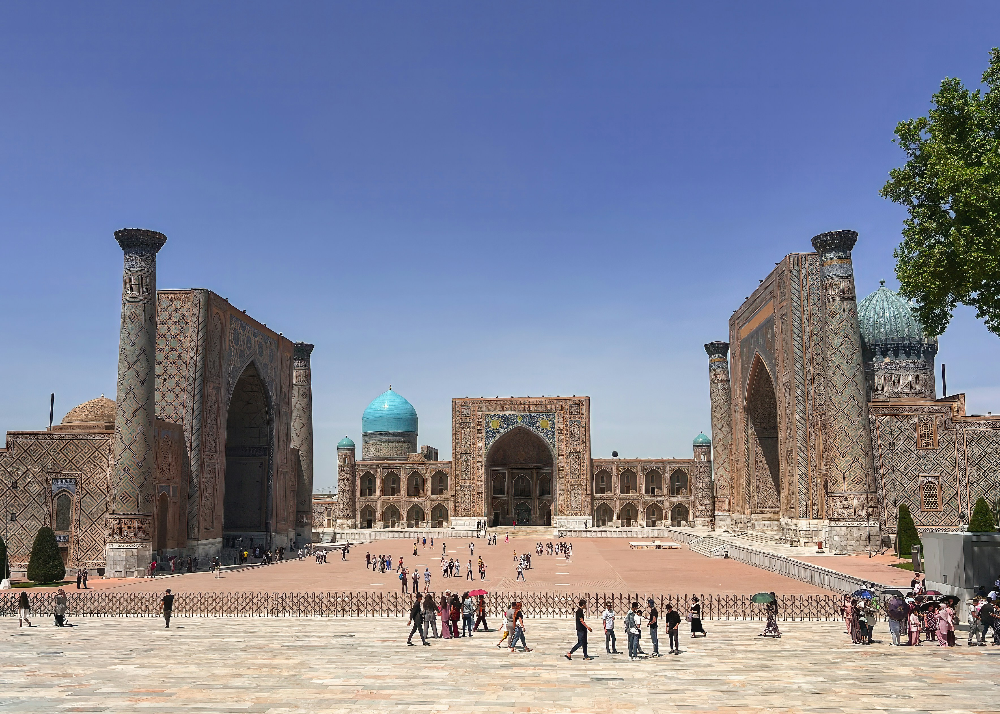

Azië Bestemmingen
Van bruisende metropolen tot serene tempels en tropische paradijzen
Ontdek Azië
Azië, het grootste continent ter wereld, biedt een ongeëvenaarde diversiteit aan culturen, landschappen,
keukens en ervaringen. Van de eeuwenoude tempels in Zuidoost-Azië tot de futuristische skylines van
Japan en Singapore, van de uitgestrekte Himalaya tot de tropische stranden van Thailand – hier wacht een
wereld aan ontdekkingen.
48+
Landen
2300+
Talen
60%
Wereldbevolking
5000+
Jaar geschiedenis
Uitgelichte bestemmingen
Japan
Beste tijd: Maart-Mei (lente), Okt-Nov (herfst)
Ideale duur: 10-14 dagen
Perfect voor: Cultuur, Gastronomie, Technologie
Japan is een fascinerende mix van eeuwenoude tradities en baanbrekende moderniteit. Verken
bruisend Tokyo met zijn neonverlichting en technologische wonderen, ontdek historisch Kyoto met
honderden tempels en schrijnen, geniet van de natuurlijke schoonheid van Mount Fuji, en ervaar
de verfijnde Japanse keuken – van verse sushi tot hartige ramen.
Hoogtepunten
- Bewonder de kersenbloesem (sakura) in het voorjaar
- Ervaar de hoge snelheid van de Shinkansen (bullet train)
- Bezoek eeuwenoude tempels en tuinen in Kyoto
- Overnacht in een traditionele ryokan met onsen (warmwaterbronnen)
- Proef authentieke Japanse gerechten zoals sushi, ramen en wagyu-rundvlees
Bekijk reisopties

Thailand
Beste tijd: Nov-Maart (droog seizoen)
Ideale duur: 10-14 dagen
Perfect voor: Strand, Cultuur, Nachtleven
Thailand, het 'Land van de Glimlach', is een veelzijdige bestemming met voor ieder wat wils.
Verken het chaotische maar fascinerende Bangkok, ontspan op de paradijselijke stranden van
eilanden als Phuket en Koh Samui, trek door weelderige jungles in het noorden rond Chiang Mai,
en geniet overal van de wereldberoemde Thaise keuken.
Hoogtepunten
- Bezoek de indrukwekkende tempels (wats) van Bangkok
- Ontspan op de tropische stranden van zuidelijke eilanden
- Verken de jungle rond Chiang Mai
- Ga snorkelen of duiken in kristalhelder water
- Volg een Thaise kookcursus
Bekijk reisopties
Bali, Indonesië
Beste tijd: April-Okt (droog seizoen)
Ideale duur: 7-14 dagen
Perfect voor: Cultuur, Strand, Wellness
Bali, het 'Eiland der Goden', is een tropisch paradijs met een unieke cultuur en adembenemende
landschappen. Van de spirituele tempels en groene rijstterrassen tot de levendige kunstscene en
prachtige stranden – Bali biedt een perfecte mix van ontspanning, avontuur en culturele
verrijking, allemaal op één betoverende locatie.
Hoogtepunten
- Verken de kunstzinnige stad Ubud en omliggende rijstterrassen
- Bewonder de zonsondergang bij de Tanah Lot tempel
- Surf in Kuta of ontspan op de stranden van Seminyak en Nusa Dua
- Volg een yoga- of meditatieles
- Proef de heerlijke Balinese keuken
Bekijk reisopties
Aziatische regio's

Oost-Azië
Een fascinerende mix van oude tradities en futuristische ontwikkelingen.
- Japan
- China
- Zuid-Korea
- Taiwan
- Hong Kong

Zuidoost-Azië
Tropische stranden, eeuwenoude tempels en adembenemende natuurlijke schoonheid.
- Thailand
- Vietnam
- Indonesië
- Singapore
- Maleisië

Zuid-Azië
Levendige culturen, indrukwekkende architectuur en kleurrijke tradities.
- India
- Nepal
- Sri Lanka
- Bhutan
- Malediven

Centraal-Azië
Volg de historische Zijderoute door ongerepte landschappen.
- Kazachstan
- Oezbekistan
- Kirgizië
- Tadzjikistan
- Turkmenistan
Praktische reisinformatie
Visum & Documenten
Zorg voor de juiste papieren voor je Aziatische avontuur:
- Veel Aziatische landen vereisen een visum voor Nederlanders
- Sommige landen bieden visa on arrival of e-visa opties
- Controleer altijd of je paspoort nog minstens 6 maanden geldig is
- Maak kopieën van belangrijke documenten
- Zorg voor een goede reisverzekering
Gezondheid & Veiligheid
Bereid je goed voor op je reis:
- Informeer naar aanbevolen vaccinaties
- Neem een basis EHBO-kit mee
- Drink alleen gebotteld water
- Bescherm jezelf tegen muggen (malaria/dengue)
- Respecteer lokale gebruiken en kledingvoorschriften
Transport in Azië
Manieren om rond te reizen in Azië:
- Binnenlandse vluchten zijn vaak betaalbaar voor langere afstanden
- Treinreizen zijn een geweldige manier om het landschap te ervaren
- Lokaal vervoer (tuk-tuks, riksja's) voor korte afstanden
- Maak gebruik van ride-hailing apps in grote steden
- Huur een scooter om eilanden en plattelandsgebieden te verkennen
Etiquette & Cultuur
Respecteer lokale gebruiken:
- Verwijder schoenen voordat je een tempel of iemands huis betreedt
- Bedek schouders en knieën bij religieuze plaatsen
- In sommige landen is het ongepast om publieke affectie te tonen
- Leer een paar basiswoorden in de lokale taal
- Vraag toestemming voordat je mensen fotografeert
Culinaire ontdekkingen
Azië staat bekend om zijn diverse en smaakvolle keukens, die tot de beste ter wereld behoren. Hier zijn
enkele gerechten die je niet mag missen:
| Land |
Beroemde gerechten |
Karakteristieken |
Niet te missen ervaring |
| Japan |
Sushi, Ramen, Tempura |
Subtiel, seizoensgebonden, precise presentatie |
Bezoek een traditionele izakaya (pub) |
| Thailand |
Pad Thai, Groene curry, Tom Yum Goong |
Pittig, zuur, zoet en zout in balans |
Straatvoedsel verkennen op een avondmarkt |
| India |
Butter Chicken, Biryani, Dosa |
Rijk aan kruiden, diverse regionale stijlen |
Thali proeven (proeverij van diverse gerechten) |
| Vietnam |
Pho, Banh Mi, Verse loempia's |
Fris, kruidig, gebruik van verse kruiden |
Kookcursus in Hoi An volgen |
| China |
Peking eend, Dim Sum, Hot Pot |
Diverse regionale keukens, gebalanceerde smaken |
Deelnemen aan een traditionele thee-ceremonie |